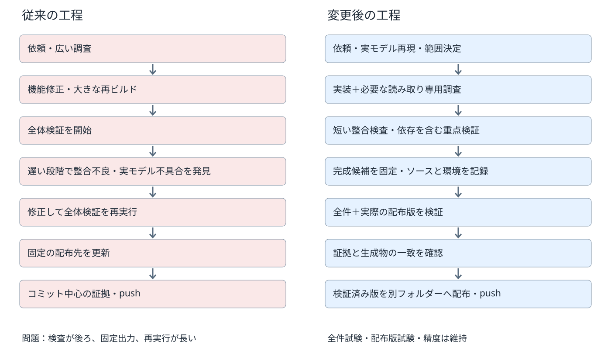
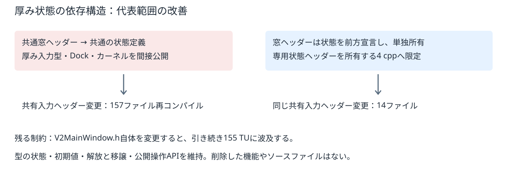

2026-10-14 ／ 発表資料へ転用するための工程・構成・実測比較。図は別添SVG、数値はCSV/JSONでも提供。
過去5回の全体ゲート14回中8回が失敗し再実行。最新の過去CTestは約18分30秒、開発版GUI約7分44秒、配布生成・配布版試験約8分7秒。ツール外経過は約52%だが、内部思考だけの時間とは断定できない。これらは過去の参考値で、今回の同条件速度比較ではない。

| 箇所 | 従来の問題 | 変更後の対応・残る制約 |
|---|---|---|
| 検証入口 | ローカルの未管理スクリプト、固定ブランチと変更許可リスト | Git管理された入口、段階と証拠を分離。未知・共有変更は全体へ拡張 |
| 検証順序 | 整合不良や実モデル不具合の発見が遅い。check-v2はV2試験を重複実行 | 実モデル再現と短い9試験を先行。完成候補の全体ゲートは維持 |
| 対象漏れ | 重点フィルターが全件・配布試験へ残り得る | 正確な一覧照合、明示的全件指定、0件・未知・重複・失敗・skip・古い証拠を拒否 |
| 並列処理 | 固定TEMP、共有キャッシュ、配布先、ビルドexeが衝突 | 実行・試験ごとの分離、ビルドツリーの排他、GUI/配布資源を管理。配布物から起動 |
| 配布検査 | 開発環境のDLLやプラグインで不足が隠れる可能性 | 配布版の全件試験を保持し、qt.confと検索環境を分離 |
| 担当運用 | 大きな文脈や重複調査、実行資源の競合 | 主担当＋必要時の読み取り専用2担当。実行は主担当が管理 |

| 代表条件 | 変更前 | 変更後 | 再コンパイル数 |
|---|---|---|---|
| unchanged | 2.80秒 | 2.90秒 | 0 → 0 |
| cpp | 21.17秒 | 15.31秒 | 1 → 1 |
| shared-header | 621.23秒 | 66.58秒 | 157 → 14 |
同じWindows PC、MSVC Release、アプリターゲット、並列2。ウォームアップを除く増分ビルドを各条件1回測定。mtimeのみを変更し、ソースのバイト列は維持。共有入力ヘッダーは同じThickenInputState.h。新状態ヘッダーの直接所有は4 cppだが、この測定では他の直接使用箇所も含め14ファイルとなる。小さい差の再現性や平均値は未評価。
自己試験用ターゲットの全面分離は今回見送り。単に静的ライブラリへまとめてもコンパイル削減にならず、別runner化には既存--self-testと配布契約の整理が必要。代表状態の分離で効果が得られたため、全面移行を混ぜない。
同じ17試験を逐次→並列2の順に実行。44.55秒 → 32.23秒。試験名・件数・成功条件は同じ。全体ゲートの削減率ではなく、この代表群の結果。初回/後続のファイルキャッシュ等の影響は残る。
| 従来 | 変更後 |
|---|---|
_GO.cmd / _QUICK.cmd（ローカル）
└ _claudeout/gpt-current.py（未管理）
├ gpt-current-check.txt（同名を更新）
└ gpt-verified.json（コミット中心）
scripts/check*.ps1 / test.ps1
out/kachakachaCAD-v2（再生成時に置換）
V2MainWindowTypes.h（厚み状態も公開） | scripts/verify.py / verify.ps1 / verify.sh scripts/_GO.cmd / _QUICK.cmd（正式入口） scripts/verification/ runner.py / selection.py / scopes.json evidence.py / isolated_test.py / tests.py benchmark.py / make_comparison.py scripts/run-verified.py out/verification/<実行ID>/ result.json / *.log / *.xml selftest-*.json / isolated/ / package/ out/releases/<実行ID>/ package/ / package.zip / verification.json V2ThickenPreviewState.h（非公開・単独所有） docs/development/（手順と比較資料） |
| 対象 | 扱いと理由 |
|---|---|
| _claudeout/gpt-current.py | 正式な通常検証からの依存を廃止。歴史的Git公開フラグの互換処理用にローカルでは保全。新手順はこれなしで再現できる |
| 旧gpt-current-check.txt / gpt-verified.json | 新手順では使用しない。過去の証拠として保全 |
| ルートのローカル_GO.cmd / _QUICK.cmd | 通常経路はGit管理された入口へ委譲。旧内容はout/verification/legacy-entry-backupへ保全。Git公開の旧フラグは警告して旧経路へ委譲 |
| V2MainWindowTypes.h等の旧ヘッダー | 他の型に必要なので存続。削除したのは厚み状態の旧定義と不要なinclude辺。状態定義は専用ファイルへ移動 |
| 古いworktree・配布版・バックアップ・増分ビルド | 削除しない。所有者と用途を保全 |
| 実際に削除したソースファイル | なし。容量を理由とする削除や機能・試験の削除もなし |
全体状態: passed。CTest 193件、UI [461, 461]件。開始 2026-10-14T07:56:27.747175+00:00、終了 2026-10-14T08:16:03.880865+00:00。検証ソース 49e9684c2e413e441f8d1324a64619ed708901bc。
基盤の負の経路を8単体試験で検査。実アプリでも空・未知・重複選択を拒否。整合チェック9件が成功。ユーザー実モデルの厚み操作・値変更・再利用が成功し、原本SHA256不変。これらを全体検証と区別する。
全体GUI試験2回は残る。主ウィンドウの共通ヘッダーの波及も残る。代表的小修正の依頼開始から検証済み配布版までの30分達成は未評価で、次の通常開発で測る。今回の整備時間やコメントだけの重点検証試行を、実際の機能修正の待ち時間と呼ばない。
python scripts/verify.py plan python scripts/verify.py preflight python scripts/verify.py focused python scripts/verify.py full python scripts/verify.py publish --evidence out/verification/<実行ID>/result.json python scripts/run-verified.py out/releases/<実行ID> ./scripts/verify.sh focused linux-core
初回・未知変更・検証環境の変更では全体へ拡張。重点検証は途中確認であり配布証拠にはならない。コミット済み入力の全体検証後にGit pushする場合はfull --push。図のSVGと数値CSVは発表資料へそのまま転用できる。
ビルド比較CSV ／ ビルド比較JSON ／ 並列比較JSON ／ 正式な手順
全体ゲートは 1176.13秒（約19分36秒）。CTest 193件、開発版GUI 461件、配布版GUI 461件、旧アプリ自己試験が成功。開始・終了は下表のJST。全体ゲート自体が従来より速くなったとする同条件測定ではない。
| 工程 | 開始 | 終了 | 秒 | 終了コード |
|---|---|---|---|---|
| doctor | 2026-10-14 16:56:28 JST | 2026-10-14 16:56:29 JST | 0.95 | 0 |
| configure | 2026-10-14 16:56:29 JST | 2026-10-14 16:56:41 JST | 11.19 | 0 |
| inventory | 2026-10-14 16:56:41 JST | 2026-10-14 16:56:41 JST | 0.14 | 0 |
| build-3 | 2026-10-14 16:56:41 JST | 2026-10-14 16:56:51 JST | 10.58 | 0 |
| preflight | 2026-10-14 16:56:51 JST | 2026-10-14 16:56:55 JST | 3.97 | 0 |
| build-5 | 2026-10-14 16:56:55 JST | 2026-10-14 16:57:23 JST | 28.21 | 0 |
| ui-inventory | 2026-10-14 16:57:23 JST | 2026-10-14 16:57:24 JST | 0.12 | 0 |
| tests | 2026-10-14 16:57:24 JST | 2026-10-14 17:15:50 JST | 1105.95 | 0 |
| legacy-self-test | 2026-10-14 17:15:50 JST | 2026-10-14 17:16:02 JST | 12.09 | 0 |
重点入口の受入実験はCTest 15件・GUI 128件に限定され、成功。コメントを一時追加した同じコミットでも内容変更を検出し、元のバイト列へ復元。重点証拠による配布は拒否。所要220.25秒は実際の機能修正の待ち時間ではない。
最初の全体試験は旧KCD試験の相対パス依存で開発版・配布版の各1ケースが失敗した。試験は削除せず、fixtureの明示と配布同梱で修正し、全体を再実行した。レビューで見つかった設定/キャッシュ変更時の重点検証漏れと、GUI版でコアだけが成功する条件も修正し、異常系試験へ追加した。
Windows用GUIプラットフォームで配布版のサンプル読込と画面生成を確認し、画像を確認済み。日本語パスのfixture読込も成功。ユーザー実モデルの原本は不変。検証済み配布物のバイト列も維持している。
Git候補版までのファイル一覧は追加24・変更30・削除0。ローカル互換入口と最終資料追加は一覧の範囲外。変更一覧CSV / 変更一覧JSON / 受入結果JSON / 全体工程の時刻CSV。
このHTMLのブラウザ目視確認はアプリのローカルURLポリシーで拒否され未実施。HTMLの構造、参照ファイル、SVGのXMLは確認済み。初期比較の生成器出力へ最終受入記録を追記した資料なので、make_comparison.pyの再生成時にはこの最終記録も保持する。